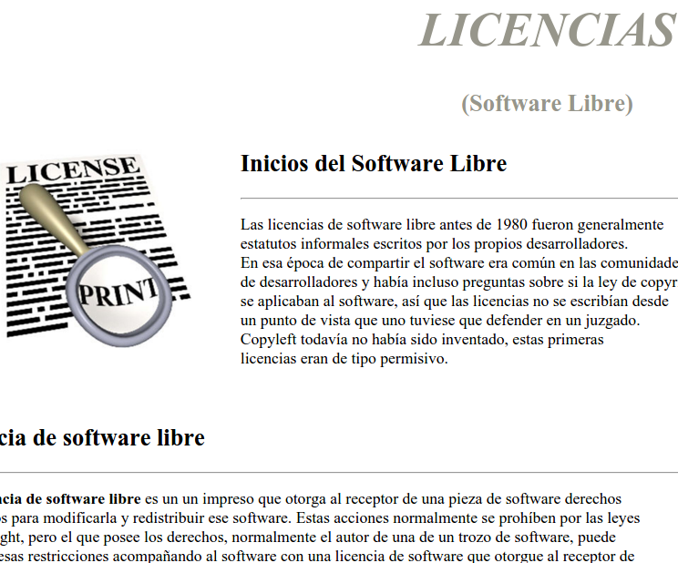
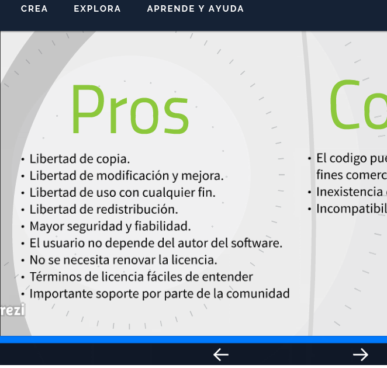
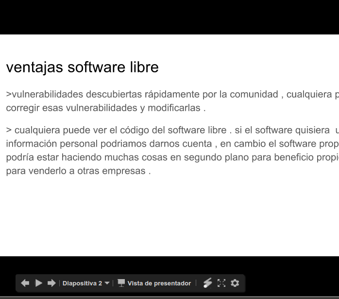
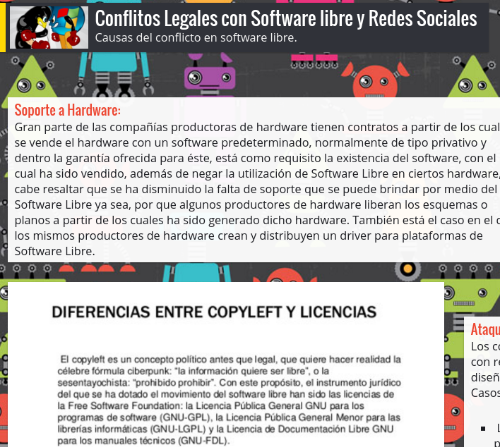
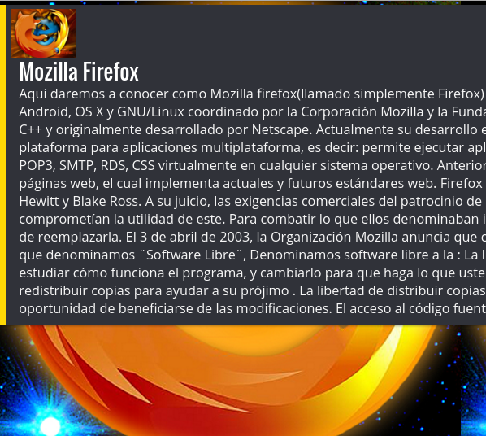
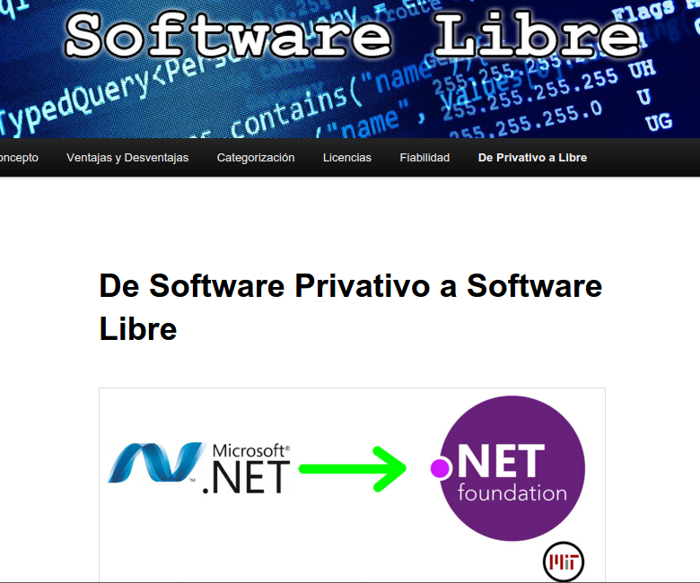

Libre Software
Comisión 36

Licencias de Software Libre
Gabioud, Fabián Leonel
Panica Gira, Federico Ronaldo
desconocido

Ventajas y desventajas del Software Libre
Berto Rodríguez, Yesica Aylen
Codesal, Luis
Falcón Guillén, Germán
Gattone, Maria De Los Angeles
Espinoza, Julián Uriel
Martinez, Alan Nicolás
Marote, Fabricio Gastón

Seguridad en el Software Libre
Aguirre, Fabian
Mesquita Drago, Ivan
Scorza, Fedrico

Conflictos legales populares y Redes Sociales de Software Libre
Fernandez Zucarelli, Facundo
Lopez, Eva Nadia
Rodriguez, Brenda Estefanía
desconocido

Navegador Firefox y organizacion Mozilla
Jara Sanabria, Nicolás Ezequiel
desconocido
desconocido

Software privativo liberado
Wdowiak, Ian Franco
Coria, Lautaro Manuel
Del Valle, Juan Emanuel
Cuello, Eduardo Nahuel
Aquino Martinez, Liz Mariela
Mamani Jatabe, Luis Alejandro
Gallipi, Franco Leonel